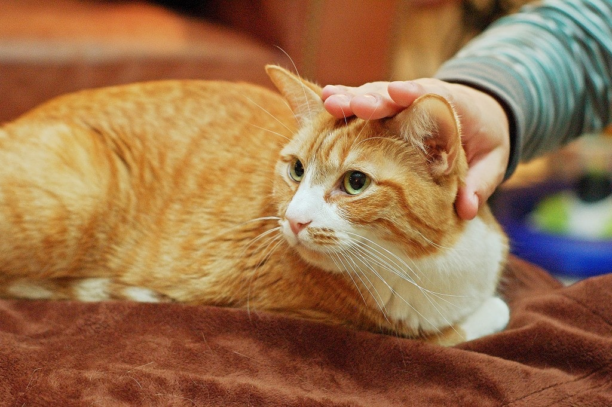

고양이 지능
- 사실 지능지수가 현재 신뢰도가 낮은 지표지만, 동물의 지능지수는 더욱 그렇다. 단순히 해당 종족 내 개체 간의 상대적 비교 정도로 봐야 한다. 특히 고양이나 개 같은 애완동물은 해당 애호가 협회에서 후원하거나 연구자부터가 애호자이다 보니 해당 동물을 위한 지능검사법이라는 식의 반응 테스트법을 만들어 다른 동물과의 지능 검사와 비교해 실질적인 내용을 왜곡하는 일도 많다. 해당 단체가 의도하지 않더라도 언론을 통해 이상하게 퍼지는 일도 많다. 이런 조사 자료에는 보노보의 IQ가 120으로 나와 어지간한 인간을 압도하게 나오거나, 다람쥐의 지능이 코끼리를 능가한다거나 하는 괴상한 연구 결과가 많다.
- 고양이는 애완동물로서의 필생의 라이벌인 개와 비교할 때, 단독 행동에서는 개보다 좋은 모습을 보이고 반대로 개는 집단 활동에서 좋은 모습을 보인다. 양쪽이 그런 방향으로 진화했기 때문. 고양이는 야생에서도 단독 생활을 하고, 개의 원종인 늑대는 집단생활을 한다. 유전적으로 개와 회색늑대는 완전히 같은 종에 속한다. 개는 늑대와 비교해서도 극단으로 인간과 협력하기 위해 진화하였다. 늑대의 단독 지능은 개보다 높은 편이지만 개가 알아먹는 인간의 힌트를 이해하지 못한다. 예를 들어 인간이 눈짓과 몸짓으로 무언가를 가리켰을 때 개는 그 의미를 대강 알아차리지만 늑대는 알아차리지 못한다.
- 밀접한 연관이 없거나 혹은 참거두고래의 지능이 정말로 인간보다 높거나 둘 중 하나일 것으로 보이지만, 사실 후자의 결론이 아니더라도 연관이 없는 것은 아니다. 실제 인지능력이나 학습능력이 높은 동물은 높게 나오는 경향이 있다. 예를 들어 유인원인 고릴라와 침팬지는 각각 90억, 60억 개 수준이고, 고릴라의 경우는 1,000가지 수화를 배우고 인간과 일정부분 커뮤니케이션이 가능한 케이스까지 존재했다. 즉, 참거두고래가 인간보다 지능이 낮다고 가정해도 대뇌피질 내의 뉴런 수 외에도 다른 요소가 지능에 영향을 줄 수 있을 수도 있다. 완전한 비례 관계까지는 아니게 될 뿐이다.